《金融時報》、《華爾街日報》
被報道暫停出貨的國家
4國
馬來西亞、新加坡、泰國和印尼。期間未定，以便評估出口合規。這是兩報報道，不是英偉達官方聲明，也不是已宣布的永久禁運。
效力：停運名單不含巴西。巴西只在商務部規則的須許可目的地，不在這次停運名單。
2026年11月27日 · 星期五科技要聞 · 美國黑色星期五
英偉達感恩節被報道暫停向馬來西亞、新加坡、泰國和印尼出貨伺服器，以評估出口合規；這不是官方宣布的永久禁運。英倫銀行把超大規模業者的總潛在曝險估為略高於四萬億美元，包括債務與表外承諾，並非已經實現的虧損。Google計劃明年把許多Play商家的電話與地址向全球公開，蘋果則只在相關歐洲國家顯示。iPhone Duo的一個月使用評測承認：人臉解鎖仍不是Face ID，部分Google應用還留着黑邊。
人物：Kara Swisher
這是《金融時報》與《華爾街日報》的報道，不是英偉達官方聲明，也不是已宣布的永久禁運。停運名單只有馬來西亞、新加坡、泰國和印尼。 TechCrunch；並參 The Verge、Data Center Dynamics
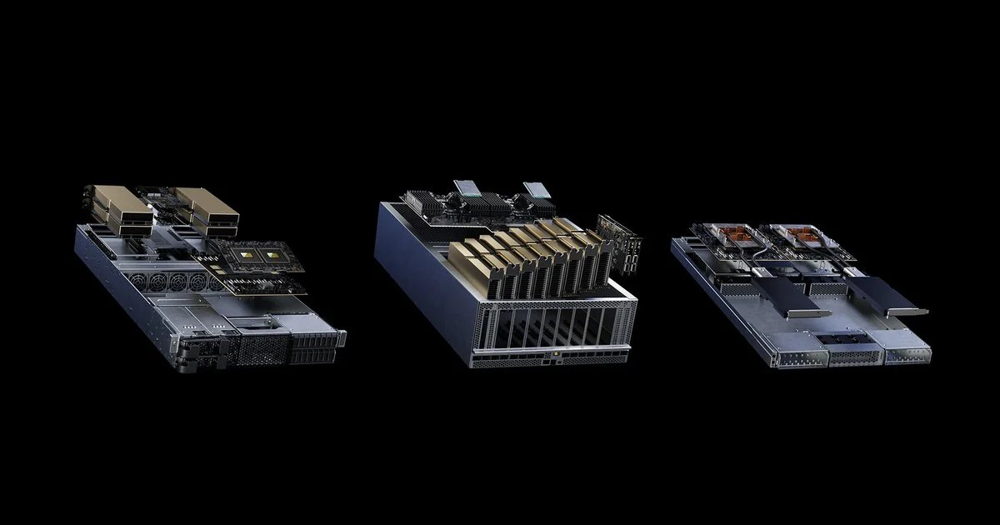
他們剛讓創辦人復職，並對外說這對國家安全沒有風險。感恩節當天，英偉達卻要代工廠先把四個國家的伺服器停下來。這不是發表會上的自信，是執照與股價保衛戰裡，一塊來不及圓滿的公關補丁。
據《金融時報》與《華爾街日報》報道，英偉達已要求代工夥伴，包括戴爾與超微（Super Micro），暫停向馬來西亞、新加坡、泰國和印尼出貨伺服器，期間未定，以便評估區域夥伴是否符合美國出口規定。兩份報道指向同一條被堵住的路：中國公司一直從這些國家的數據中心遠端取用英偉達晶片。據Data Center Dynamics轉述，商務部十一月十六日規則要求，向印尼、馬來西亞、新加坡、泰國或巴西出口先進半導體須取得許可，並限制以第三國機房遠端使用先進晶片。巴西在規則裡，卻不在這次停運名單上。可見這不是條文自動執行，是公司自己劃的緊急界線。《華爾街日報》引述進步研究所估算，這類海外遠端機房約供應中國人工智能算力的百分之二十四。你們不是不知道這條路，是路被收窄以後，才叫代工廠停車。
停運的同時，責任歸屬仍然模糊。據該刊轉述《金融時報》，英偉達新加坡子公司在二零二五年入賬一千零四十億美元營收。CBS新聞十一月二十五日的調查寫，至少兩家加州公司以美國身分取得優先或最高層級合作夥伴資格，但實際由中資控制：RiCloud AI的母公司是總部在深圳、於香港上市的裕興科技；Aivres前身是浪潮在加州的子公司，中國母公司被列入黑名單後才改名，Aivres本身不在名單上。美國政府並未指控這兩家公司違法。CBS並轉述《紐約時報》兩個月前的貿易紀錄分析：Aivres在二零二四年四月至二零二六年二月，至少出口五十六億美元先進技術到東南亞，其中約三十億美元為含Blackwell的電腦。這些數字不是本報的獨立核對，卻仍未被公司當眾畫清終點。
參議員沃倫本週仍說，英偉達與董事會還欠國會關於出口管制合規的答案。停運可以是補課，也可以是把問題從新聞週期裡先搬走。哪一種，要看他們能不能說出晶片的終點，而不是再發一份「沒有國安風險」的聲明。
《金融時報》、《華爾街日報》
被報道暫停出貨的國家
4國
馬來西亞、新加坡、泰國和印尼。期間未定，以便評估出口合規。這是兩報報道，不是英偉達官方聲明，也不是已宣布的永久禁運。
效力：停運名單不含巴西。巴西只在商務部規則的須許可目的地，不在這次停運名單。
進步研究所，經《華爾街日報》再經 TechCrunch 轉述
海外遠端機房約佔中國人工智能算力
24%
這類海外遠端機房約供應中國人工智能算力的百分之二十四。
效力：進步研究所估算，須保留轉述鏈，不是本報統計。
Data Center Dynamics 轉述《金融時報》
英偉達新加坡子公司二零二五年營收
1040億美元
據該刊轉述《金融時報》，英偉達新加坡子公司在二零二五年入賬一千零四十億美元營收。
效力：DCD 轉述《金融時報》對二零二五年公司賬目的數字。
CBS 轉述《紐約時報》兩個月前分析
Aivres 約兩年出口至東南亞
56億美元
其中約三十億美元為含Blackwell的電腦。美國政府並未指控RiCloud／Aivres違法；Aivres本身不在黑名單。
效力：CBS 轉述《紐約時報》貿易紀錄分析，不是本報或 CBS 的獨立統計。
來源：TechCrunch（11月26日，轉述《華爾街日報》）；The Verge（11月26日，轉述《金融時報》）；Data Center Dynamics（11月26日）；CBS News 調查（11月25日傍晚）。圖源：同類相關圖，非該則新聞原圖。Data Center Dynamics（英偉達 MGX 平台，非東南亞倉庫現場）
人物：Elon Musk
這是略高於四萬億美元的總潛在曝險，包括債務與表外承諾，不是已經實現的虧損，也不是央行宣布泡沫爆破。英國金融體系目前仍具韌性。 英國央行《金融穩定報告》
英倫銀行沒有宣布泡沫爆破。它只是把一張逾四萬億美元的或有負債表，放到陽光下。你們把租約、採購承諾、擔保和循環出資叫做「投資」，物理世界仍然只認已經接上電、已經賺到錢的那一部分。
英國央行金融政策委員會十一月二十六日發布《金融穩定報告》。報告寫，人工智能投資支撐了全球增長，但其融資擴張的形式「日益複雜、循環且不透明」，正在加深全球金融體系的相互連接，使一處壓力更容易傳到另一處。該行內部估算，大型雲端與資料中心業者（hyperscalers）的總潛在曝險——包括債務與資產負債表外的合約承諾——略高於四萬億美元。這不是已經實現的虧損，是壓力情景下可能變得沉重的義務。報告並寫，這些業者、數據中心商與其他人工智能基礎設施公司的借款幾乎是二零二五年的兩倍；超大規模業者二零二六年的債券發行料將超過三千零五十億美元，約佔全球投資級發行的百分之八，整個生態系今年的總發行規模已超過包括英國在內的許多單一主權國家。
第一性原理很簡單：循環出資不是市場，是迴路。報告指出，人工智能供應鏈愈來愈依賴少數大型雲端業者與晶片設計商的股權投資或合約承諾，包括租約、採購協議、後盾與擔保；在某些情況下，這些大公司同時是投資者、客戶與供應商。資產負債表外的安排，使外界更難判斷未來負債是否還得起。報告引用分析師估算，二零二六年至二零二八年約七千億美元的數據中心資本開支可能由私人信貸融資；摩根大通更廣義估計，約一點四萬億美元的預期人工智能資本開支可能由替代資本負擔。股票估值在近期下跌之後，以若干指標衡量仍然偏高，並且嵌入了對未來盈利的強烈預期。
英國金融體系目前仍具韌性，跨市場蔓延迄今有限。這句話不是替你們背書。它只是說：迴路還沒斷。若對未來收入的預期被下修，尤其是貨幣化路徑仍不清楚時，這些融資承諾就可能吃緊。四萬億美元首先是一張互相擔保的網，不是已經併網發電的機房。
英國央行《金融穩定報告》
大型雲端與資料中心業者總潛在曝險
略高於4萬億美元
包括債務與資產負債表外的合約承諾。這不是已經實現的虧損，是壓力情景下可能變得沉重的義務。英倫銀行沒有宣布泡沫爆破。
效力：官方內部估算，禁止寫成已實現虧損或泡沫已爆破。
英國央行《金融穩定報告》
超大規模業者二零二六年債券發行
逾3050億美元
約佔全球投資級發行的百分之八。整個生態系今年的總發行規模已超過包括英國在內的許多單一主權國家。
效力：報告預估，百分之八是佔全球投資級發行的比例。
報告引用分析師估算
二零二六至二零二八年數據中心資本開支
約7000億美元
可能由私人信貸融資。
效力：報告引用的分析師估算，須保留「引用／估算」。
報告引用摩根大通更廣義估計
預期人工智能資本開支
約1.4萬億美元
可能由替代資本負擔。
效力：報告引用的估算，不是本報推算。
英國央行《金融穩定報告》
英國金融體系
目前仍具韌性
跨市場蔓延迄今有限。這不是替業者背書，只是說迴路還沒斷。
效力：官方表述，不可刪。
來源：英國央行 Financial Stability Report（2026年11月26日）；The Next Web（11月26日）。圖源：同類相關圖，非該則新聞原圖。Google，經 The Next Web（芬蘭 Hamina 數據中心，非英倫銀行報告原圖）
人物：Edward Snowden
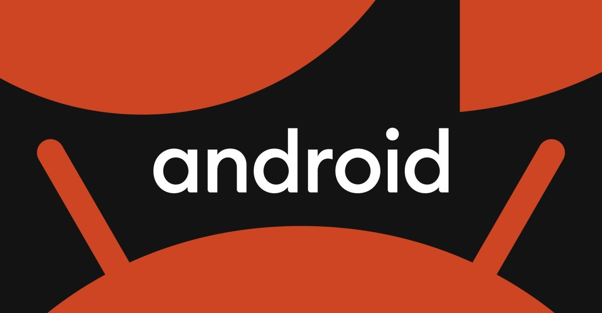
歐洲要的是可被問責的商店。Google 給的，是把獨立開發者的電話和地址，掛到全世界的商品頁上。沒有免費的合規午餐。便利的代價，是把住家門牌寫進一座新的公共名錄。
據The Verge，Google宣布，許多在Play商店上架的獨立開發者，明年起必須公開電話號碼與地址。這項政策旨在符合歐盟《數碼服務法》，但Google說，聯絡資料會向全球公開。開發者須在二零二七年二月一日前申報自己是否屬於英國與歐洲法律下的「商家」；Google的概括標準是，若應用程式帶來收入，尤其是經常性或高額收入，便屬此列。若只是愛好、非商業用途，或不在英國或歐洲上架，則可豁免。一旦自我申報為商家，聯絡資料將於三月一日起公開，包括電話與地址。Google不接受用郵政信箱作為開發者付款檔案地址，意味許多沒有辦公室的獨立開發者，要么把住家地址掛上網，要么花錢找註冊代理人或其他商務地址服務。有獨立開發者對The Elec說，自己正考慮只為合規而租用私人辦公室。The Verge已向Google追問，為何不准公開郵政信箱、又為何把資料公開到全球，截至刊出時尚未得到回覆。
同一套歐洲規則，蘋果的做法不同。據該刊，蘋果只會在相關歐洲國家顯示開發者地址，而不是向全世界公開；它也允許開發者提供郵政信箱，只要向蘋果提交能把信箱與常用地址對上的收據或賬單。規則要的是可被聯絡、可被問責，不是把一名在卧室寫程式的人的門牌，做成全球可搜的名錄。Google選擇把執行範圍撐到最大，又把「不准郵政信箱」寫進付款檔案，等於把合規成本從平台搬到最沒有法人盾牌的那一側。
這就是權力不對等：一座全球商店可以說自己只是在執行法律，卻在法律沒有要求全球公示、也沒有禁止郵政信箱的地方，另外加一道門。開發者若想繼續賣軟體，就得交出可被騷擾、可被定位的個人資料；若不想交，就得付費隱身，或退出英國與歐洲。監視不一定看起來像監聽器，有時只是一張被強制公開的名片。
來源：The Verge（11月26日）；Google Play 開發者說明（商家身分申報）。圖源：Alex Castro / The Verge
人物：Steve Jobs
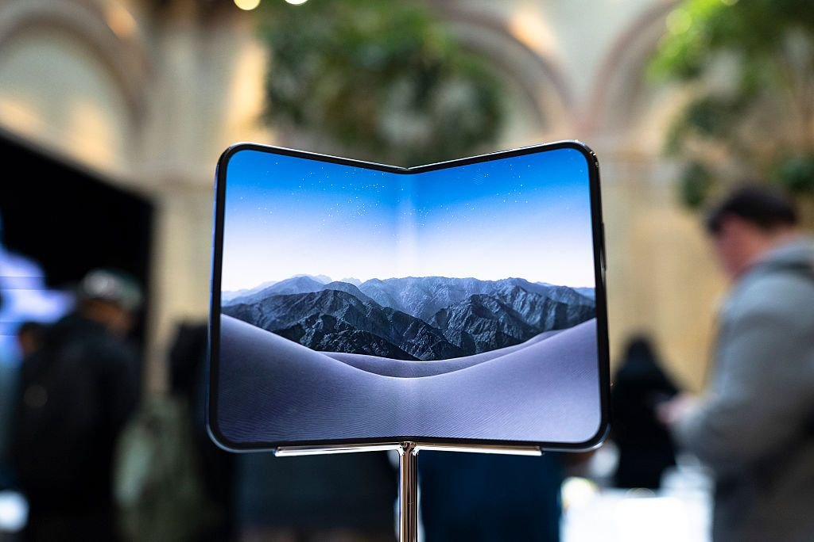
他們把摺疊當成新的品味，然後讓你重新習慣沒有 Face ID 的解鎖，和一組還在留黑邊的 Google 應用。This is junk。不是因為摺疊螢幕本身愚蠢，是因為他們先拿掉你原本認為「高階」的東西，再把「你已學會適應」寫成產品勝利。
Sarah Perez 在 TechCrunch 寫下使用 iPhone Duo 接近一個月的體驗。她承認，當初擔心的取捨，對她來說已沒有預期中那麼重要：多數應用已經為摺疊優化，她重新熟悉了 Touch ID，而且多數日子並不懷念 Pro Max 的相機。她仍會想念長焦鏡頭，仍渴望 Face ID——儘管沒有先前那麼強烈，因為蘋果在最近一次更新推出了人臉解鎖，而那並不是 Face ID。一句已經把問題說完了：補上的是「能用臉打開」，不是原來那套被當成高階標誌的方案。中段還有更直接的破綻。她寫，十一月中蘋果稱已有超過二十萬款 Duo 適配應用，她日常使用的多數應用也已去掉早期測試者痛恨的側邊黑帶；「明顯的例外」是 Gmail、Drive 等關鍵 Google 應用。一台要人重新組織使用習慣的新形態電話，在郵件和雲端檔案上仍留着黑邊，這不是生態系成熟，是作業沒做完。
這篇評測真正花力氣描寫的，是並排多工、把電話折成小書架看書、不必再用 PopSocket，以及手機殼、掛繩、吊飾把 Duo 變成可以炫耀的配件。這些可以是有趣的使用方式，但它們救不了被拿掉的鏡頭，也解釋不了為何「人臉解鎖」仍要特地聲明不是 Face ID。把一部約兩千美元的電話寫成你不會帶去沙灘的東西，已經說明它有多嬌貴；再用殼與吊飾填滿選擇，只是把尚未完成的硬體，包裝成可以個性化的時尚物件。
品味不是讓人適應殘缺。品味是在換形態的時候，先把解鎖、相機和日常應用做完，而不是先出一款會改變習慣的機器，再等用戶寫下「規格不再是重點」。規格本來就不該是重點。重點是：打開它的時候，不必先原諒它。
來源：TechCrunch（Sarah Perez，11月26日）。圖源：Ming Yeung / Getty Images，經 TechCrunch
星期五稿，分類精選三十一則，含專題在所屬欄重出的短項。當日為美國黑色星期五。各欄底部為該欄熱度排行；同級熱度依內容包原序。圖源註寫在各卡內文區。
TechCrunch；並參 The Verge、Data Center Dynamics、《金融時報》、《華爾街日報》
《金融時報》與《華爾街日報》報道，英偉達已要求戴爾、超微等代工夥伴，暫停向馬來西亞、新加坡、泰國和印尼出貨伺服器，期間未定，以便評估出口合規。背景是中國公司從這些國家的數據中心遠端取用晶片。商務部本月規則亦覆蓋巴西，但巴西不在停運名單。這不是官方宣布的永久禁運。詳見專題。
同類相關圖，非該則新聞原圖。Data Center Dynamics（英偉達 MGX 平台，非東南亞倉庫現場）
英國央行；並參 The Next Web、Bloomberg
英國央行十一月二十六日報告寫，人工智能投資支撐增長，但其融資形式日益複雜、循環且不透明。該行估算，大型雲端與資料中心業者的總潛在曝險——包括債務與表外合約承諾——略高於四萬億美元；這不是已實現虧損。今年債券發行料逾三千零五十億美元，約佔全球投資級發行百分之八。英國金融體系目前仍具韌性。詳見專題。
同類相關圖，非該則新聞原圖。Google，經 The Next Web（芬蘭 Hamina 數據中心，非英倫銀行報告原圖）
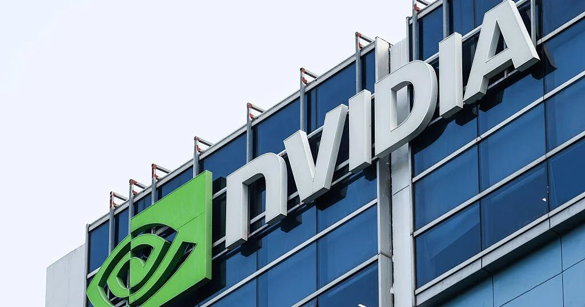
CBS News
CBS十一月二十五日調查寫，「首選夥伴」RiCloud AI的母公司是深圳、在香港上市的裕興科技；「精英」夥伴Aivres前身是浪潮加州子公司，母公司被列入黑名單後才改名，Aivres本身不在名單上。美國政府並未指控它們違法。CBS並轉述《紐約時報》兩個月前分析：Aivres在約兩年間至少出口五十六億美元先進技術到東南亞，其中約三十億美元為含Blackwell的電腦。不要寫成已定罪，或把轉述當成CBS獨立統計。
同類相關圖，非該則新聞原圖。Getty Images，經 CBS News（非公司辦公樓原圖）
The Verge；並參 TechCrunch
X於感恩節推出面向十三至十七歲帳戶的首套家長監護。父母可設定時長上限、審批追蹤者、限制推薦與私訊對象，並看見青少年與誰聊天，但不能閱讀私訊或瀏覽紀錄，也不能代為發文。雙方須同意才生效；一名家長最多管理五個帳戶。預設為保護模式，不顯示敏感內容、不投放定向廣告。俄勒岡與弗吉尼亞剛就Grok深度偽造起訴SpaceX。這不是庭外和解方案。
The Verge
The Verge
為符合歐盟《數碼服務法》，Google要求許多獨立開發者在二零二七年二月一日前申報是否為「商家」，三月一日起向全球公開電話與地址。付款檔案不接受郵政信箱。蘋果面對同一套規則，只在相關歐洲國家顯示地址，並允許提供能證明對應關係的郵政信箱。不要寫成所有開發者，也不要寫成已經開始公示。詳見專題。
Alex Castro / The Verge
TechCrunch
Sarah Perez在TechCrunch寫下使用iPhone Duo接近一個月的體驗，認為摺疊形態改變了她的使用習慣，當初擔心的取捨影響比預期小，但仍想念長焦鏡頭，並渴望Face ID。蘋果最近更新的人臉解鎖並不是Face ID。她引述蘋果十一月中的說法，適配應用已逾二十萬款，惟Gmail、Drive等關鍵Google應用仍留側邊黑帶。「約兩千美元」是文中口語，不要寫成官方標價。詳見專題。
Ming Yeung / Getty Images，經 TechCrunch
美聯社；並參 CNBC、NPR
據美聯社與CNBC，哥倫比亞特區聯邦地區法院法官Loren L. AliKhan於十一月二十五日發出初步禁制令，禁止聯邦通訊委員會在八家ABC自有電視台的提前換照程序中採取進一步行動，包括發出聽證指定令。八家電台為WABC、KABC、WLS、WPVI、KTRK、KGO、WTVD與KFSN。ABC指程序對編輯方針造成寒蟬效應；報道稱法官認為ABC很可能證明，此舉是對受保護編輯言論的報復。這是初步禁制令，不是最終判決，也不等於八張執照已被永久保住。
Heather Diehl / Thibault Camus / Pool / AFP via Getty Images，經 NPR（該則新聞配圖）
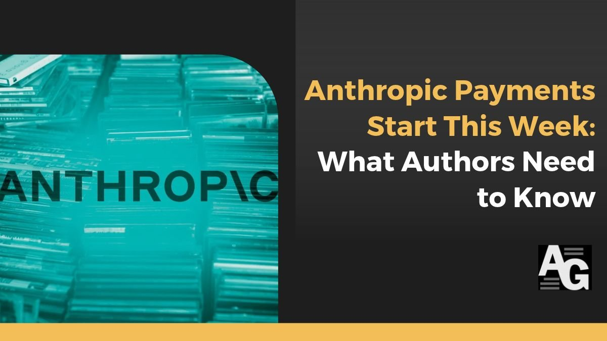
The Verge；並參 Authors Guild
據Authors Guild，Bartz訴Anthropic和解的首期款項於十一月二十三日起的一週內發放。入口網站顯示為無爭議的申索，現時先支付每件作品約百分之七十，即二千二百零三點五六美元；其餘約三成須待Anthropic在上市後三十日內向和解基金補足款項後再發。有爭議的申索會較遲處理。The Verge寫，這筆十五億美元和解的全額，平均每本書約三千美元，其中一部分要到明年才到。不要寫成所有作者已收齊全款。
Authors Guild
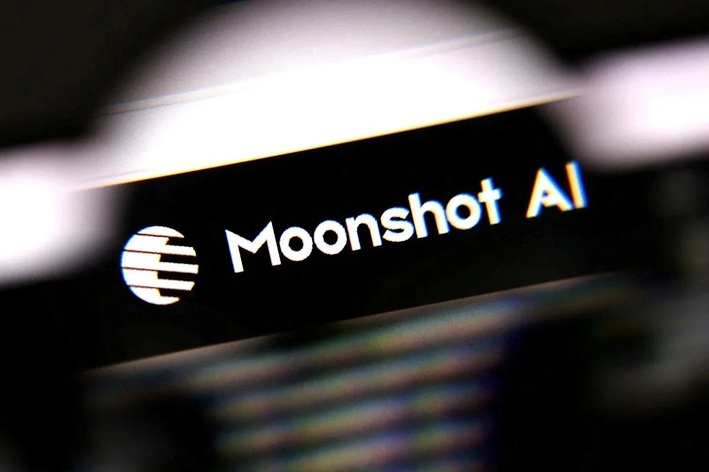
路透（Yahoo Finance轉載）
路透引述知情人士寫，智譜原計劃本月推出約三兆參數的旗艦模型GLM-5.5，但已落後，新的海外算力限制可能把發布推入二零二七年第一季或更晚；該公司周一先推出GLM-5.4。月之暗面若失去海外算力，內部預期重大版本間隔可能由六個月拉長至一年或以上，Kimi K4或延至二零二七年中。兩家公司未立即回應。這是匿名消息，不要寫成官方時間表，或把蒸餾指控當成已證實方法。
Dado Ruvic / Reuters（Moonshot 標誌示意圖）
Authors Guild；並參 The Verge
美國作家協會確認，無爭議申索於十一月二十三日起的一週內，先收到每件作品約百分之七十，即二千二百零三點五六美元；其餘須待公司在上市後三十日內向和解基金補足款項。有爭議申索會稍後處理。不要與昨刊Anthropic股價或Marlowe種子輪混寫成同一件事，也不要寫成全額已到位。詳見h8。
Authors Guild
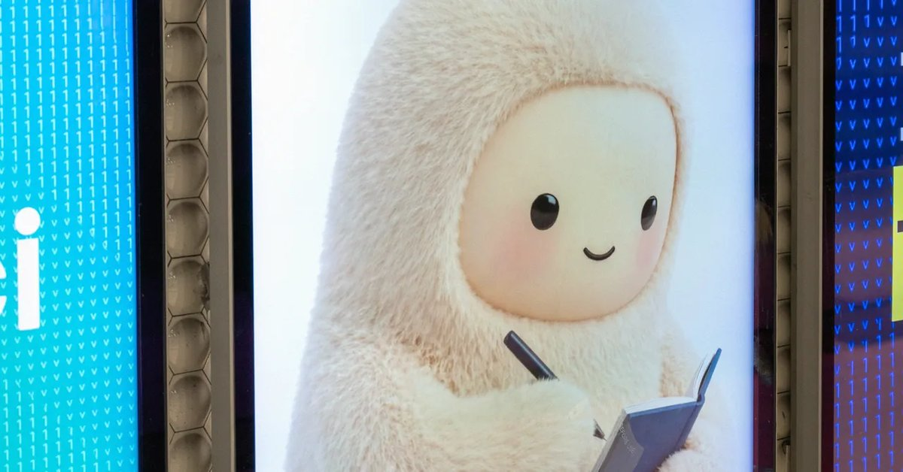
WIRED
據WIRED，英國金融行為監管局創新主管Colin Payne表示，該局上週建議與Meta在沙盒中聯合測試Muse，但被拒絕。Muse已於十一月二十四日在英國推出。Payne關注代理如何代用戶付款，並說Meta上月才告知計劃。Meta發言人稱已與適當監管機構建設性接觸。北美自九月以來已有逾一千萬用戶開通。不要寫成Meta已被裁定違法。
Smith Collection / Getty Images，經 WIRED
英國央行
除四萬億美元潛在曝險外，報告還寫，前沿人工智能能力自七月以來繼續增強，尤其是代理與開源權重模型；近期事件顯示，對齊並控制單一代理與多代理動態仍然困難，網絡與營運風險對金融穩定更為突出。報告並以近期Google Cloud與微軟故障為例，說明單一供應商中斷可同時打擊許多機構。這些是官方風險判斷，不是已經發生的系統性危機。詳見專題。
同類相關圖，非該則新聞原圖。Google，經 The Next Web（芬蘭 Hamina 數據中心，非英倫銀行報告原圖）
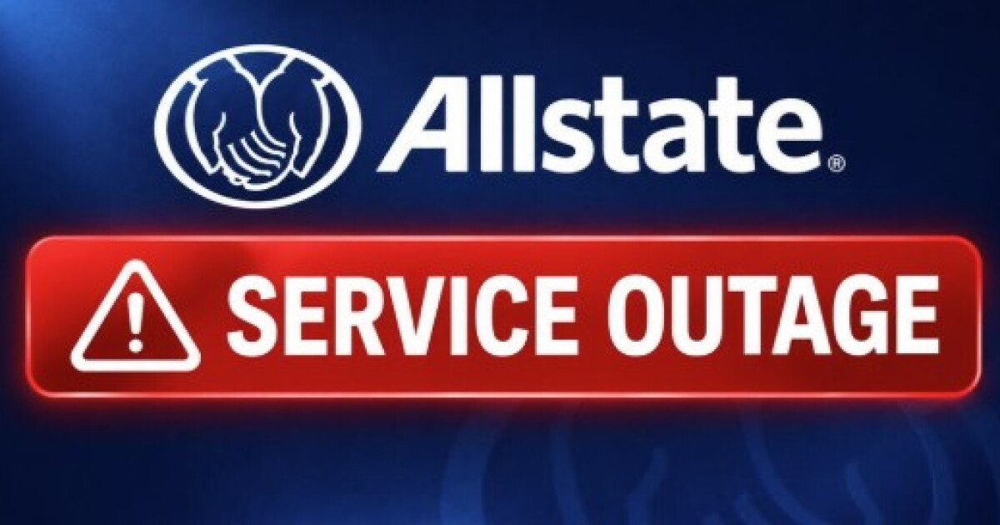
WGCU（NPR 成員台）；並參 TechCrunch 昨稿
Allstate自十一月二十三日周一早上起的系統故障，至二十六日周四上午仍未恢復，影響網站、應用程式、登入、電話、電郵與支付。公司仍未說明原因與修復時間。WGCU引述聲明：部分通道受限，但公司仍可受理與理賠；若中斷影響付款，不會因此失去保障或被收滯納金。聲明裡「四十八小時」是公司用語，不要寫成故障只持續兩天。這是昨刊後續，不是新的獨立事故。
WGCU / NPR
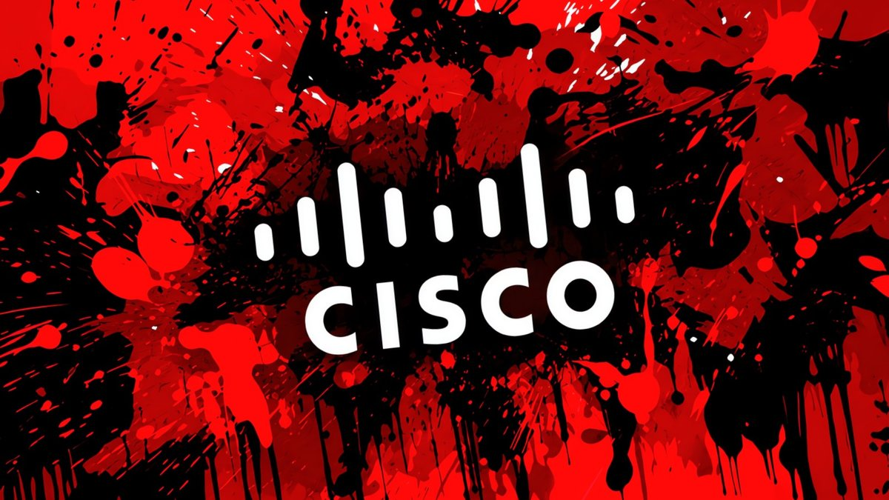
BleepingComputer；並參 Cisco、CISA
美國網絡安全及基礎設施安全局已將Cisco Expressway集群漏洞CVE-2026-76466列入已知被利用目錄，並要求聯邦民用行政機構在三日内修補。漏洞源於硬編碼憑證與證書驗證不足，未認證攻擊者可以root執行指令。Cisco十月發補丁時，其PSIRT稱未發現實際利用；CISA其後改為「已被利用」。Censys當時觀察到近一萬四千九百個暴露在網上的主機。請用完整CVE編號，不要寫成發補丁當日已確認攻擊。
BleepingComputer
BleepingComputer；並參 Drupal.org、CISA
昨刊已報道Drupal安裝程式高危漏洞（CVE-2026-132165等）自十一月十九日起已有真實利用，CISA於二十四日列入已知被利用目錄，聯邦機構限期為十一月二十七日，即今日。暫時無法升級的網站應封鎖／core／install.php。不要把Drupal Steward WAF寫成所有網站的充分防護，也不要在未有新公報前宣稱攻擊已經停止。
同類相關圖，非該則新聞原圖。BleepingComputer（原則配圖 404，改用同站 Drupal 題圖）
英國央行
十一月《金融穩定報告》把前沿人工智能代理、開源權重模型，以及對單一雲端供應商的依賴，寫進金融穩定的營運風險章節，並以近期Google Cloud與微軟故障為例，說明一家供應商中斷可同時打擊許多機構。這是官方風險提示，不是某一宗新的針對銀行的攻擊聲明，也不要寫成英國金融體系已經失穩。詳見a4。
同類相關圖，非該則新聞原圖。Google，經 The Next Web（芬蘭 Hamina 數據中心，非英倫銀行報告原圖）
TechCrunch；並參 The Verge
功能面向十三至十七歲帳戶，預設保護模式；家長與青少年須雙方同意。TechCrunch引述二零二四年研究，近三分之一Alpha世代兒童擁有X帳戶，並指出平台長期存在色情、不實訊息與濫用材料，以及Grok被指生成性化兒童與女性圖像的爭議。不要把這項功能寫成已解決那些問題。詳見h4。
TechCrunch
The Verge
The Verge報道，Google Home更新讓沃爾瑪旗下三十五美元的Onn Outdoor Camera Plug-In，以及七十七美元的Onn Floodlight Camera Hardwired，也可使用Familiar Faces熟人臉孔辨識，但仍須訂閱Google Home Premium。這兩款攝影機與有線第二代Nest Cam Outdoor，還新增可在觀看即時畫面時遠端啟動或停止三十秒警報的控制。本文只依據The Verge已寫明的功能與售價，不要自行補上生物特徵儲存在雲端或本機的結論。
同類相關圖，非該則新聞原圖。Alex Castro / The Verge（非該兩款 Onn 機身原圖）
TechCrunch
這篇一個月使用評測認為，並排多工、把電話折成小書架閱讀，以及較易單手持握，是摺疊形態的主要收穫，亦花了不少篇幅寫手機殼、掛繩與吊飾帶來的個人化。必須保留的限度是：人臉解鎖仍然不是Face ID，Gmail與Drive等關鍵Google應用仍留黑邊。「約兩千美元」只是文中口語。詳見專題。
Ming Yeung / Getty Images，經 TechCrunch
The Verge；並參 Bloomberg
The Verge報道，GTA VI開發商Rockstar英國員工就IWGB正式承認協議投票，約百分之七十五反對、百分之二十五贊成，投票期為十一月十二日至二十六日，覆蓋遊戲發行。未通過則公司沒有正式會見工會代表的義務。IWGB稱會繼續組織。去年被解僱的三十一名會員案仍待就業審裁處判決。發行主管Jennifer Kolbe對彭博表示，結果反映團隊支持繼續直接溝通。
同類相關圖，非該則新聞原圖。Rockstar Games，經 The Verge（遊戲畫面，非投票現場）
WIRED
Muse已於十一月二十四日在英國上線，金融行為監管局原希望先在沙盒觀察它如何與顧客互動，尤其是如何付款，但聯合測試建議被拒。競爭和市場管理局已要求Meta修改英國條款，寫明須以合理技能與審慎提供服務，並稱若有疑慮將採取行動。不要與昨刊沃爾瑪或亞馬遜Muse商談寫成同一協議。詳見a3。
Smith Collection / Getty Images，經 WIRED
Data Center Dynamics；並參 TechCrunch、The Verge
DCD轉述《金融時報》：停運或屬暫時，為配合商務部本月十六日過渡最終規則。該規則亦將巴西列為須許可目的地，並限制遠端取用先進晶片。英偉達新加坡子公司二零二五年入賬一千零四十億美元，一年增百分之七十二，部分台灣與中國相關營收亦經新加坡入賬。不要把巴西寫進停運名單。詳見專題。
同類相關圖，非該則新聞原圖。Data Center Dynamics（英偉達 MGX 平台，非東南亞倉庫現場）
CBS News
除RiCloud與Aivres外，CBS還寫英偉達去年對華銷售近二百億美元，並在前年十一月改以客戶總部而非賬單地點披露區域銷售，使二零二四年另有七十九億美元被歸入中國總部客戶。公司年報寫，最終客戶與出貨地點可能不同於客戶總部。參議員Warren本週表示，英偉達與董事會仍欠國會關於出口管制合規的答案。詳見h3與專題。
同類相關圖，非該則新聞原圖。Getty Images，經 CBS News（非公司辦公樓原圖）
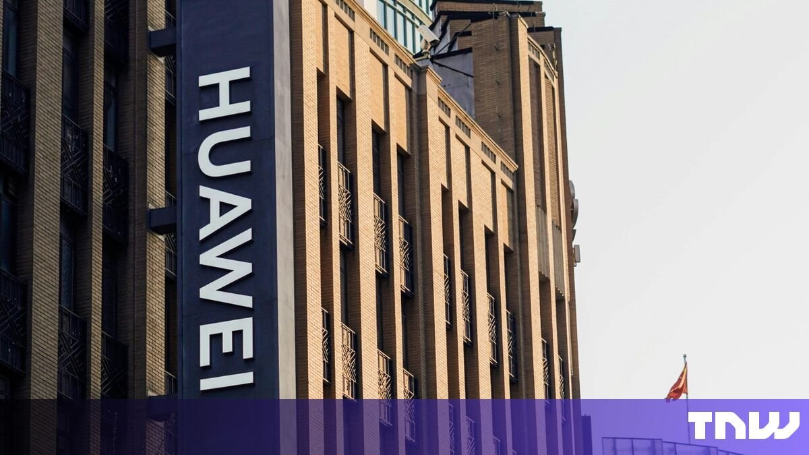
The Next Web（轉述 Bloomberg）
據The Next Web轉述彭博，華為將於二零二七年二月在三藩市一場會議上發表高頻寬記憶體設計，論文標題顯示其資料接腳密度為三星與SK海力士目前量產晶片的兩倍。目前不清楚該設計距離量產有多近；企業常在會議上發表構想而非成品。華為未即時回應彭博。不要寫成華為已能量產、出貨，或已取代韓廠。中國記憶體廠CXMT亦據報開始生產HBM，但良率偏低，同屬轉述。
同類相關圖，非該則新聞原圖。Vong Vathanak / Unsplash，經 The Next Web（華為招牌，非晶片原圖）
路透
商務部本月規則限制中國公司經海外數據中心大量取用先進美國晶片。知情人士稱，月之暗面特別依賴租用海外算力，國內產能無法補足缺口，並已加緊在歐洲尋租，也計劃接觸中國晶片廠。Anthropic九月曾稱觀察到近兩億次與克勞德的對話，懷疑與阿里巴巴、月之暗面和智譜等蒸餾行動有關；月之暗面此前否認Kimi K3靠蒸餾。詳見a1。
Dado Ruvic / Reuters（Moonshot 標誌示意圖）
美聯社；並參 CNBC、NPR
初步禁制令日期為十一月二十五日，法官為Loren L. AliKhan，適用於八家ABC自有電視台的提前換照程序，並禁止發出聽證指定令。八家呼號為WABC、KABC、WLS、WPVI、KTRK、KGO、WTVD與KFSN。不要寫成聯邦通訊委員會整體被關閉，或法官已對特朗普本人作出刑事或最終憲法判決。排版請用該則新聞原圖。詳見h7。
Heather Diehl / Thibault Camus / Pool / AFP via Getty Images，經 NPR（該則新聞配圖）
The Verge
開發者須在二零二七年二月一日前申報是否為「商家」，三月一日起向全球公開電話與地址。豁免範圍是愛好、非商業，或不在英國或歐洲上架。付款檔案不接受郵政信箱。蘋果只在相關歐洲國家顯示，並允許提供有證明的郵政信箱。不要寫成已經開始公示，或適用於所有開發者。詳見專題。
Alex Castro / The Verge
WIRED
金融行為監管局希望先看代理如何付款；資訊專員辦公室強調用戶須理解並能控制Muse如何使用個人資料；競爭和市場管理局已要求修改英國條款，寫明須以合理技能與審慎提供服務，並稱若有疑慮將採取行動保護英國消費者。這是監管表態，不是已經開罰，也不要寫成英國已禁Muse。詳見a3。
Smith Collection / Getty Images，經 WIRED
Data Center Dynamics；並參路透
據DCD，工業與安全局十一月十六日過渡最終規則，要求向印尼、馬來西亞、新加坡、泰國或巴西出口、再出口或境內轉移先進半導體須取得許可，理由是「轉移風險高於尋常」，並限制以第三國數據中心遠端使用先進晶片。路透寫，針對海外數據中心先進算力的許可要求於十一月十九日生效。這是規則本身，不等於已對所有目的地實施與英偉達四國停運相同的公司措施。
同類相關圖，非該則新聞原圖。Data Center Dynamics（英偉達 MGX 平台，非東南亞倉庫現場）
Phoronix
Phoronix十一月二十六日報道，長期支援分支共同維護者、英偉達的Sasha Levin打算在十二月下旬開啟的Linux 7.5合併窗口，向Linus Torvalds提交一套樹內文件，指導人工智能代理處理核心流程。內容包括為修補尋找Fixes標籤、穩定分支標籤、查找相同缺陷的其他實例、撰寫提交說明與KUnit測試。他已要求把agents分支從linux-next移除，因為準備直接向上游提交。這還不是已合入主線，不要寫成Linux 7.5已經包含這些技能，或Torvalds已經接受。
同類相關圖，非該則新聞原圖。Phoronix 標誌（非核心原始碼原圖）
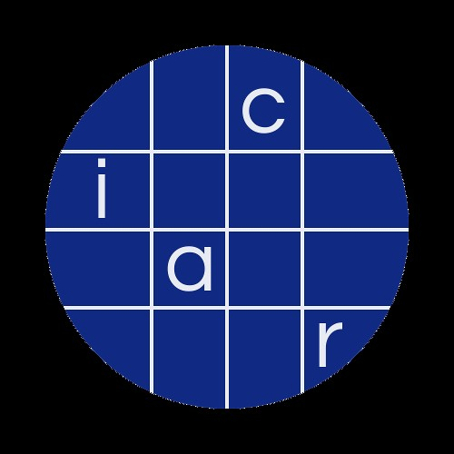
IACR ePrint；經 r/programming 討論
r/programming熱門帖指向IACR電子預印本2026／2913，稱研究人員在SHA-256的三十八步縮減回合變體上找到碰撞。完整SHA-256使用六十四步，縮減版本上的碰撞並不等於廣泛使用的完整雜湊已被破解，也不應寫成「SHA-256已死」。本報未獨立覆核論文實驗，只記錄預印本主張與討論熱度，細節以論文原文為準。
同類相關圖，非該則新聞原圖。IACR ePrint 標誌（論文頁原配圖路徑 404，改用電子預印本官方標誌，非碰撞證據）
每日 IT 報 · 2026年11月27日 · 星期五 · 美國黑色星期五
資料視覺專題版。選稿窗約 2026-11-26 美東 至 2026-11-27 香港朝早。數字分源呈現，不合併。